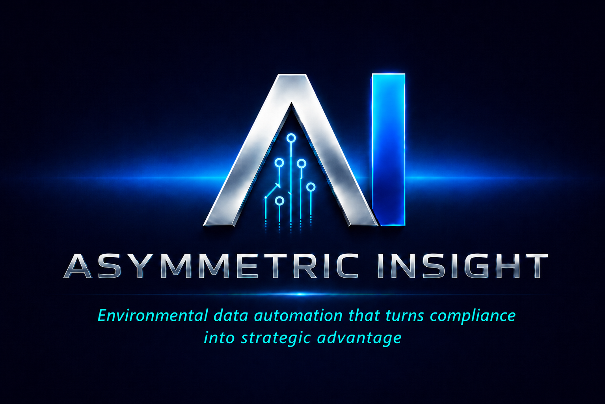

Value Asymmetry builds intelligent automation systems that simplify ESG reporting, streamline compliance workflows, and transform complex environmental data into actionable insights. Our mission is to eliminate bottlenecks and empower organizations to operate with complete clarity and operational transparency.
A look at how we architect complex environmental metrics into clear, automated visualizations.
An interactive Power BI dashboard tracking real-time environmental metrics and active pollution control processes.
Explore Architecture →A scalable cloud data architecture built to automate the collection, validation, and reporting of sustainability data.
Explore Architecture →Let's discuss how customized data automation can transform your environmental reporting workflow.
Initiate a Consultation